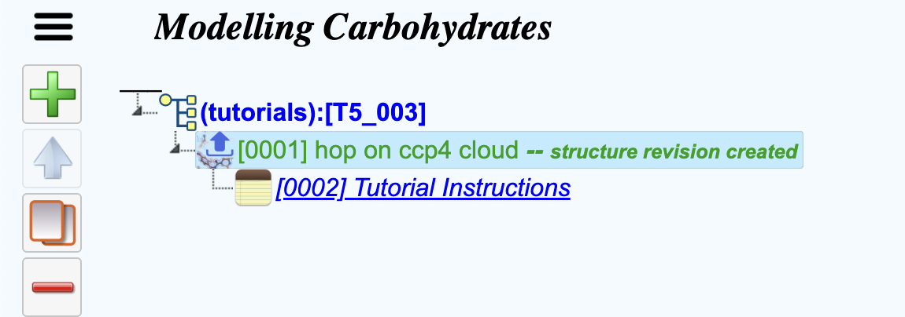
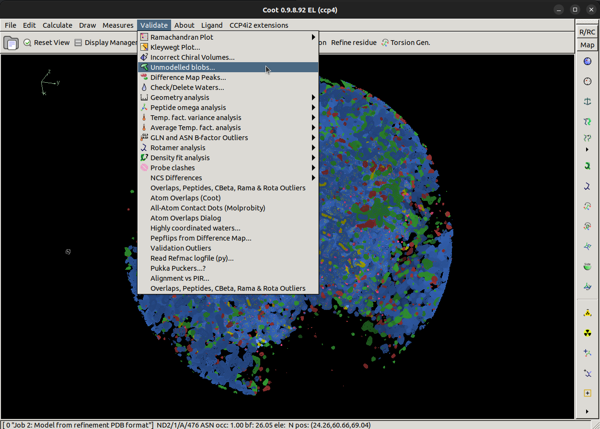

Carbohydrate Workshop
Part 1 - Modelling Carbohydrates using CCP4 Cloud
Contents
1. Introduction
Coot is a program for macromolecular model building, model completion and validation1. We will be using Coot alongside CCP4 Cloud2 to build and refine a carbohydrate chain on a human glutamate carboxypeptidase II protein3 (PDB Code: 6FE5). This structure was solved up to 1.52 Å resolution with approximately 700 residues.
This page outlines what you should do to generate a glycan with some assumed knowledge. If you aren't sure how to proceed for any given step, you can take a look at a hint or the extra instructions in the 'How do I do that?' sections.
2. Getting Started
To get started, open up CCP4 Cloud in remote mode. This part will be specific to your institution, for the York Summer School you should open a terminal with your computer in Linux and run the following commands:
1) source setup-ccp4.com
2) ccp4cloud-remote
Once CCP4 Cloud has loaded, go ahead and open the tutorial in the 'Other' folder called 'Modelling Carbohydrates'.
Find the CCP4 Cloud menu bar and click the 'Tutorials' button. Once the Cloud file browser opens, go ahead and double-click the 'Other' folder. Then double-click on 'T5_003. Modelling Carbohydrates' to open up the tutorial.I'm not sure where to find the tutorial.
Once you have the tutorial open you should see a project structured like this.

The tutorial data you will be using has been loaded and formed into a structure revision. It contains a model
and reflection data of the human glutamate carboxypeptidase II protein crystal structure we will be working on.
A structure revision is the way CCP4 Cloud stores data.
You can learn more here.
These files were generated by refining the deglycosylated deposited model against the observed reflections
with 10 cycles of REFMAC5 on CCP4 Cloud. This produces our best map (2mFo-DFc) and our difference map (mFo-DFc).
What's a structure revision?
How were these files generated?
You can take a look at what data has been loaded by clicking on the first task '(0001) - hop on ccp4 cloud'.
Hop on refers to a template created by CCP4 Cloud for use in continuing structure solution, we are using this
feature to load our data automatically rather than having to download it from this tutorial website and then upload it
into CCP4 Cloud. You can learn more here.
What's a hop on?
3. Model Building
Now that we have our project setup, we can start to interactively build the model of a glycan. To do this we need to launch Coot from within CCP4 Cloud.
Hint
Is there something from the hop on task menu that can help us do this?
Once Coot opens, it should look similar to this with an atomic model, best map (2mFo-DFc) and difference map (mFo-DFc) loaded.
What does 2mFo-DFc mean?
The 2mFo-DFc map is one of the common maps used in crystallography and is not simply a map calculated from observed reflection structure factor amplitudes and calculated phases, the addition of weightings from the figure of merit (the uncertainty of a given phase) and σa weighting factor often allows for a more interpretable map.
- Fo - Observed Reflections
- Fc - Calculated Reflections
- m - Figure of Merit
- D - σa weight factor
Look around the model, is there anything that stands out as odd?
What's odd?
There is quite a lot of positive difference density for this model, which indicates we may be missing part of the model. We're going to try and fix that.
This model contains a missing carbohydrate chain, can you spot where it is?
How do I find where it is?
You can find out where the missing glycan is by looking around the model for an area for a large positive difference density, but this may be time-consuming for a big model!
We can ask Coot to look for us using by navigating to
Validate > Unmodelled blobs...

Once we click Unmodelled blobs..., a popup will appear asking us to pick a map and model to with.
In this case, we want to search for blobs in the difference map which show when we contour that map to 4 r.m.s.d.
Changing from the default of 1.4 r.m.s.d helps us find stronger blobs. You see what this will look for if you
contour the difference map to 4 sigma. Now click the Find Blobs button to search.

Coot will then return a list of found blobs, and in our case, there is only one large blob it has found, so we can click on that to take us to the area where we have an unmodelled glycan. In a real case, you may not know what should go into a big blob of difference density, it could be missing protein, a missing ligand or a missing glycan!

If we center our view on the blob of green density closest to the protein chain, as shown, we are ready to start building a model of the missing carbohydrate chain!

Coot has a carbohydrate module we will need to load to be able to do this, navigate to and select
Calculate > Modules > Carbohydrate, which will add the
Glyco button in the top bar.

Now we can let the semi-automatic glycan builder in Coot handle the heavy lifting. Center your view
near to the ASN/476 residue of chain A. Then, navigate to and select
Glyco > N-link add NAG, NAG, BMA . Coot will then attempt to add the
first three sugars in an N-glycan chain which are NAG followed with another NAG via a 1,4 linkage, followed by a
BMA sugar via another 1,4 linkage.
Coot should have built three sugars nicely into the best (2mFo-DFc) density map as shown. The terminal BMA residue looks to have little density to support it at the moment, however, we must remember that the map was calculated in the absence of this carbohydrate chain, so before we make judgements on whether Coot has added the carbohydrates correctly, we must re-refine the structure using REFMAC.

Save the mol back to CCP4 Cloud and exit Coot, now run REFMAC with the new model to refine our structure and calculate a new map
How do I do that?
Navigate to the save button and save the updated coordinates (remember to not change the filename),
File > Save Coordinates > Select Filename > Save
Then navigate to the exit button and click:
File > Exit.
Now, select another REFMAC task but we need to change some settings before we can run it.
Under restraints, ensure Covalent/metal link identification is set to Yes, and then click Run
After 10 cycles of link-restrained REFMAC we can reopen our model and map in Coot (navigating back to A/ASN/476) to see that the semi-automatic glycan builder has done a good job, but at this point are we finished?

Are we finished?
Near to the terminal BMA sugar, we see some suspiciously ring shaped positive difference density. Using theGlyco module, see if you can come up with what should go there. Remember that
Coot looks at the center of the view to know where to put new residues, and once they are positioned, we
should refine using REFMAC. Try your best at modelling more sugars on this carbohydrate chain, we can check
how well you have done in Part 2 of this workshop!
Part 2 - Validating Carbohydrates
References
- Emsley, P., Lohkamp, B., Scott, W. G. & Cowtan, K. (2010). Features and development of Coot. Acta Cryst. D66, 486-501.
- Krissinel, E., Lebedev, A. A., Uski, V., Ballard, C. B., Keegan, R. M., Kovalevskiy, O., Nicholls, R. A., Pannu, N. S., Skubák, P., Berrisford, J., Fando, M., Lohkamp, B., Wojdyr, M., Simpkin, A. J., Thomas, J. M. H., Oliver, C., Vonrhein, C., Chojnowski, G., Basle, A., Purkiss, A., Isupov, M. N., McNicholas, S., Lowe, E., Triviao, J., Cowtan, K., Agirre, J., Rigden, D. J., Uson, I., Lamzin, V., Tews, I., Bricogne, G., Leslie, A. G. W. & Brown, D. G. (2022). CCP4 Cloud for structure determination and project management in macromolecular crystallography. Acta Cryst. D78, 1079-1089.
- Barinka C, Novakova Z, Hin N, et al. Structural and computational basis for potent inhibition of glutamate carboxypeptidase II by carbamate-based inhibitors. Bioorg. Med. Chem, Volume 27, Issue 2, 255-264
- Murshudov, G. N., Skubak, P., et al. REFMAC5 for the refinement of macromolecular crystal structures. Acta Cryst. D67, 355-367.
Special thanks to Paul Bond for testing this workshop and for the inspiration. Checkout Paul's Coot workshop here if you want to learn more about Coot.
Jordan Dialpuri and Lucy Schofield, University of York